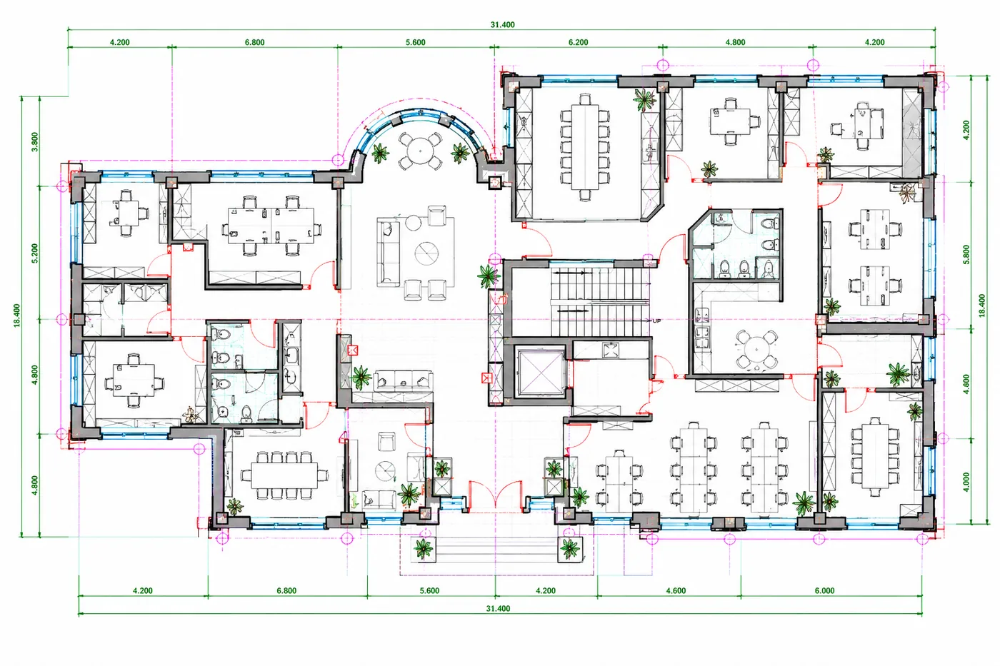

2D CAD Digitalisation
Exact digitalisation of large-format technical drawings and as-built plans, from A4 to a multiple of A0. We scan original drawings where needed, then vectorise them into CAD with dimensions, text, symbols and a layer structure, following your CAD specification.
- AutoCAD DWG / DXF, MicroStation DGN, Allplan
- Reworked and quality-assured by CAD draftsmen
- Already scanned? We digitise your image files directly
from €49 plus VAT
Explore 2D CAD